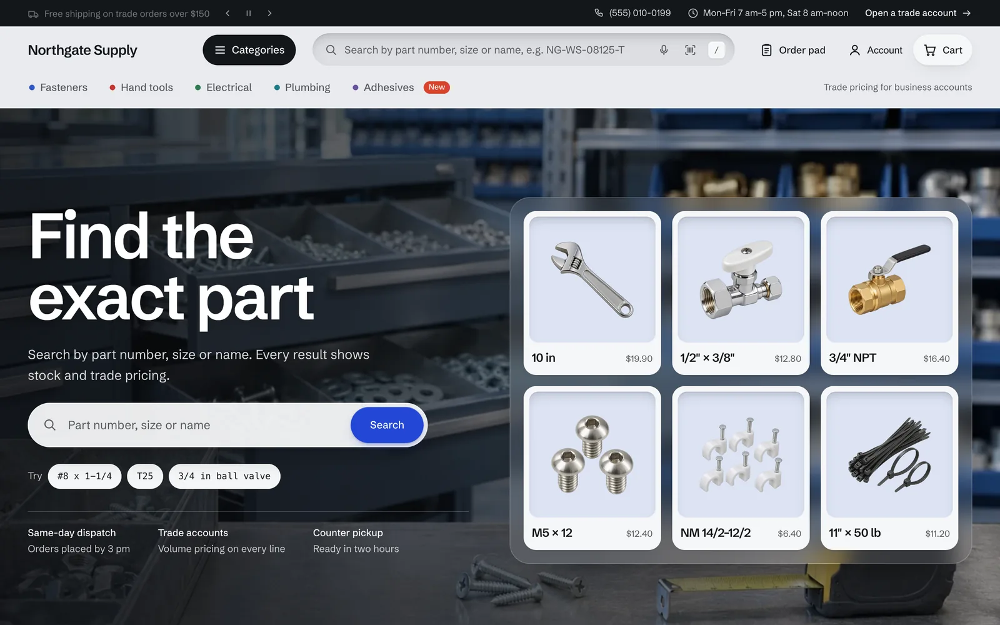

Get started
Install Caliper and choose a preset
Caliper comes with three presets. Each is a complete starting point: colors, fonts, home page sections, header and cart settings. Pick the one closest to your catalog; you can change every setting later.
#The three presets
| Preset | Made for | Look |
|---|---|---|
| Caliper | Hardware, fasteners and tools | Light foam, cobalt accents |
| Gauge | Auto parts, with a year, make and model finder and My garage | Dark graphite, safety orange |
| Foundry | Industrial and B2B supply, trade pricing and reorders | Pale foam, teal |


#Add the theme
- In your Shopify admin, open Online StoreThemes.
- Find Caliper in the Theme Store and select Try theme, or Add theme after you buy it. It is added to your theme library unpublished, so your live store does not change.
- On the Caliper card, select Customize to open the theme editor.
- Open Theme settings (the paint brush icon in the left bar), select Change theme style at the top and pick Caliper, Gauge or Foundry. Save.
#Before you publish
- Create the product data fields so sizes, specifications and compatibility show up. See Product data.
- Set up your menus and filters. See Menus, header and footer and Filters and search.
- Check a product page, a collection, the cart and search on your phone.
- Publish from Online StoreThemes with Publish on the Caliper card.
#Moving from another theme
Your products, collections, pages, menus, metafields and apps stay where they are when you switch themes. Theme settings and section content do not move between themes, so plan to set up the home page and header again. Product metafields you already have can be reused: Caliper reads fields in the caliper namespace, and you can copy values into them with a bulk editor or a CSV export and import.
#Updating Caliper
When a new version is released, Shopify shows Update available on the theme card. Updating creates a new copy of the theme with your settings and content carried over; the old copy stays in your library. Setting names never change between versions, so updates do not reset your choices. Code you edited yourself is not carried over, which is why every customization in Caliper is a setting or a block. See Release notes.